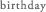
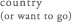

- 
- 1985年2月8日
- 兵庫県
- AB型
- クラシックピアノ（3歳から）
- 平井 堅さん
DREAMS COME TRUE さん - ラフマニノフ
- 太陽がいっぱい
- 
- ポーランド・チェコ・スロバキア・ハンガリー
- DRAMA
-
連続ドラマ
- 2018年10月～2019年3月 NHK 連続テレビ小説｢まんぷく｣ 香田克子役
- 2018年 3月～ 4月 SAT WOWOW 連続ドラマW｢闇の伴走者～編集長の条件」主演 水野優希役
- 2017年10月～12月 SUN NTV 日曜ドラマ｢今からあなたを脅迫します｣ 来栖稚奈役
- 2017年10月～12月 毎週月～金 テレビ朝日帯ドラマ劇場｢トットちゃん！｣ 主演 黒柳朝役
- 2016年 4月～ 6月 THU C X 木曜劇場｢早子先生、結婚するって本当ですか？｣ 主演 立木早子役
- 2016年 2月～ 3月 SAT NHK 特集ドラマ｢恋の三陸 列車コンで行こう！｣ 主演 岩渕由香里役
- 2015年 4月～ 5月 SAT WOWOW 連続ドラマW｢闇の伴走者」主演 水野優希役
- 2014年10月～12月 THU C X 木曜劇場｢ディア･シスター｣ 主演 深沢葉月役
- 2014年 7月～ 9月 SAT NHK 土曜ドラマ｢芙蓉の人～富士山頂の妻｣ 主演 野中千代子役
- 2013年 4月～ 6月 TUE C X ｢鴨、京都へ行く｡-老舗旅館の女将日記-｣ 主演 上羽鴨役
- 2012年 7月～ 9月 THU C X 木曜劇場 東野圭吾ミステリーズ 第3話｢エンドレス･ナイト｣ 主演 田村厚子役
- 2012年 1月～ 3月 SUN C X ｢早海さんと呼ばれる日｣ 主演 早海優梨子役
2011年 7月～ 8月 TUE NHK ドラマ10 向田邦子ドラマ｢胡桃の部屋｣ 主演 三田村桃子役
2011年 1月～ 3月 TUE C X ｢CONTROL-犯罪心理捜査-｣ 主演 瀬川理央役 - 2010年 3月～ 9月 NHK 連続テレビ小説「ゲゲゲの女房｣ ヒロイン 飯田布美枝役
- 2009年10月～12月 FRI TBS ｢おひとりさま｣ 沢井君香役 レギュラー出演
- 2009年 1月～ 3月 SUN TBS ｢本日も晴れ｡異状なし｣ 西門うらら役 レギュラー出演
- 2008年 7月～ 9月 SAT TBS ｢恋空｣ 桜井ミナコ役 レギュラー出演
- 2008年 6月～ 7月 SAT NHK ｢監査法人｣ 山中茜役 レギュラー出演
- 2008年 4月～ 6月 SUN TBS ｢猟奇的な彼女｣ 朝倉南役 レギュラー出演
- 2007年 3月～ 4月 NHK ｢グッジョブ｣ 上原草子役 レギュラー出演
- 2006年 7月～ 9月 FRI TBS ｢タイヨウのうた｣ 橘麻美役 レギュラー出演
- 2006年 4月～ 6月 MON C X ｢トップキャスター｣ 野原芽衣役
- 2005年 4月～ 6月 TUE C X ｢恋に落ちたら～僕の成功の秘密｣ ヒロイン 白川香織役 レギュラー出演
- 2004年 7月～ 9月 TUE C X ｢人間の証明｣ 朝枝路子役 レギュラー出演
- 2004年 4月～ 6月 SAT NTV ｢仔犬のワルツ｣ 鴻池聖香役 レギュラー出演
スペシャルドラマ
- 2018年 5月 4日 NTV スペシャルドラマ｢天才バカボン３～愛と青春のバカ田大学｣ バカボンのママ役
- 2017年 8月26日 NTV 24時間テレビ40ドラマスペシャル｢時代をつくった男 阿久悠物語｣ 深田雄子役
- 2017年 1月 6日 NTV 金曜ロードSHOW!特別ドラマ企画｢天才バカボン２｣ バカボンのママ役
- 2016年10月22日 C X 土曜プレミアム｢特命指揮官 郷間彩香｣ 主演 郷間彩香役
- 2016年 9月30日 TBS 湊かなえ×TBSドラマ特別企画｢往復書簡〜十五年後の補習」主演 岡野万里子役
- 2016年 3月11日 NTV 金曜ロードSHOW!特別ドラマ企画｢天才バカボン～家族の絆｣ バカボンのママ役
- 2016年 1月 3日 C X 新春スペシャルドラマ｢坊ちゃん｣ マドンナ役
- 2013年 9月27日 C X 金曜プレステージ｢屍活師～女王の法医学～｣ 主演 桐山ユキ役
2013年 9月17日 C X スペシャルドラマ｢花の鎖｣ 主演 梨花役
2013年 8月 4日 E X ドマスペシャル｢二十四の瞳｣ 主演 大石久子役
2012年 6月17日 C X ｢早海さんと呼ばれる日スペシャル 後編｣ 主演 早海優梨子役 - 2012年 6月 9日 C X ｢早海さんと呼ばれる日スペシャル 前編｣ 主演 早海優梨子役
- 2012年 4月 7日 TBS ｢ブラックボード～時代と戦った教師たち～第3夜｣ 主演 滝沢桃子役
- 2011年11月26日 C X ｢世にも奇妙な物語2011年秋の特別編｣『憑かれる』 主演 倉田聖美役
- 2011年 4月 9日 NTV ｢熱中時代｣ 朝比奈遥役
- 2011年 2月29日 E X ｢遺恨あり 明治十三年 最後の仇討ち｣ なか役
- 2010年10月22日 C X ｢東野圭吾ドラマスペシャル 探偵倶楽部｣ 漆原こずえ役
- 2010年 NHK地デジ推進Webドラマ｢いちごとせんべい｣｢割れたせんべい｣ 主演 佐々木綾子役
- 2008年10月 1日 NTV ｢課長・島耕作 2～香港の誘惑～｣ 大町久美子役
- 2008年 6月25日 NTV ｢課長・島耕作｣ 大町久美子役
- 2008年 3月31日 WOWOW｢君の望む死に方｣ 主演 碓氷優佳役
- 2004年12月25日 C X ｢X’smap～虎とライオンと五人の男｣
ゲスト出演
- 2011年10月 9日 C X ｢マルモのおきてSP｣ 優梨子役
- 2010年10月21日 C X ｢医龍3｣第2話 根岸紗江役
- MOVIE
-
- 2017年 1月27日公開 ｢ドクター･ストレンジ｣日本語版吹替(マーベル) クリスティーン･パーマー役
- 2008年 4月26日公開 ｢砂時計｣(東宝) 水瀬杏役
- 2008年 4月19日公開 ｢チェスト！｣(ティ･ジョイ) 白石奈津子役
- 2007年12月 1日公開 ｢XX (エクスクロス)～魔境伝説～｣(東映) 水野しおり役
- 2007年10月 6日公開 ｢未来予想図～ア･イ･シ・テ・ルのサイン～｣(松竹) 宮本さやか役
- 2006年11月18日公開 ｢アジアンタムブルー｣(角川ヘラルド映画) ヒロイン 続木葉子役
- COMMERCIAL
-
- カネボウ「DEW」
- JSコーポレーション
- アサヒビール ｢クリアアサヒ プライムリッチ｣
- JAバンク
- MUSIC
-
＜シングル＞
- 2008年 2月27日発売 ｢流れる雲よりもはやく｣ (EPICレコードジャパン)
- 2007年12月19日発売 ｢Rain｣ (EPICレコードジャパン)
- 2007年 7月11日発売 ｢Moonshine～月あかり｣ (EPICレコードジャパン)
＜アルバム＞
- 2016年12月 7日発売 ベストアルバム「THE BEST～10 years story～」
- 2015年 4月 8日発売 オリジナル6thアルバム ｢Music Box｣(EPICレコードジャパン)
- 2013年10月 9日発売 オリジナル5thアルバム ｢WOMAN｣ (EPICレコードジャパン)
- 2013年 5月22日発売 松下奈緒/野崎良太(Jazztronik) ｢鴨、京都へ行く。ミュージックコレクション｣ (EPICレコードジャパン)
- 2012年 2月29日発売 オリジナル4thアルバム ｢for me｣ (EPICレコードジャパン)
- 2010年 9月22日発売 オリジナルベストアルバム ｢Scene＃25～Best of Nao Matsushita｣ (EPICレコードジャパン)
- 2009年 2月 4日発売 オリジナル3rdアルバム ｢pf｣ (EPICレコードジャパン)
- 2008年 2月27日発売 ｢チェスト！｣ オリジナルサウンドトラック (EPICレコードジャパン)
- 2007年10月10日発売 オリジナル2ndアルバム ｢poco A poco｣(EPICレコードジャパン)
- 2006年10月18日発売 オリジナル1stアルバム ｢dolce｣ (EPICレコードジャパン)
- 2006年 2月 1日発売 ｢イマージュ5cing｣ 恋におちたらimageVersion
- 2005年 2月23日発売 ｢NHK大河ドラマ 義経 音楽絵巻 オリジナルサウンドトラック｣
- RADIO
-
- ｢SEIKO presents 松下奈緒 Sound Story｣(2013年4月～2017年3月)
毎週金曜 17:00-17:25(TOKYO FM) 毎週土曜 20:00-20:25(FM OSAKA)
毎週日曜 22:00-22:25(FM AICHI)/22:30-22:55(FM FUKUOKA)
- J-WAVE「ALLEGRO ANDANTE」(アレグロ アンダンテ)
毎週土曜 23:00-23:54 (2008年3月終了)
- ｢SEIKO presents 松下奈緒 Sound Story｣(2013年4月～2017年3月)
- DVD
-
2015年 1月21日 Blu-ray ｢松下奈緒 チェコ･プラハの旅～ミュシャ幻の大壁画公開～」(ポニーキャニオン)
2011年10月19日 DVD「Concert Tour Scene#25」(EPICレコードジャパン)
2005年 5月18日 DVD「約束」(ポニーキャニオン)
- BOOK
-
2011年 3月15日 アーティストブック「Scene#25」(yamaha music media corporation)
2010年 1月24日 フォトブック「Laugh&Leilani」(株式会社ワニブックス)
2009年 4月10日 フォト＆スコアブック「pf」(yamaha music media corporation)
2007年10月10日 フォト＆スコアブック「Dolce」(yamaha music media corporation)